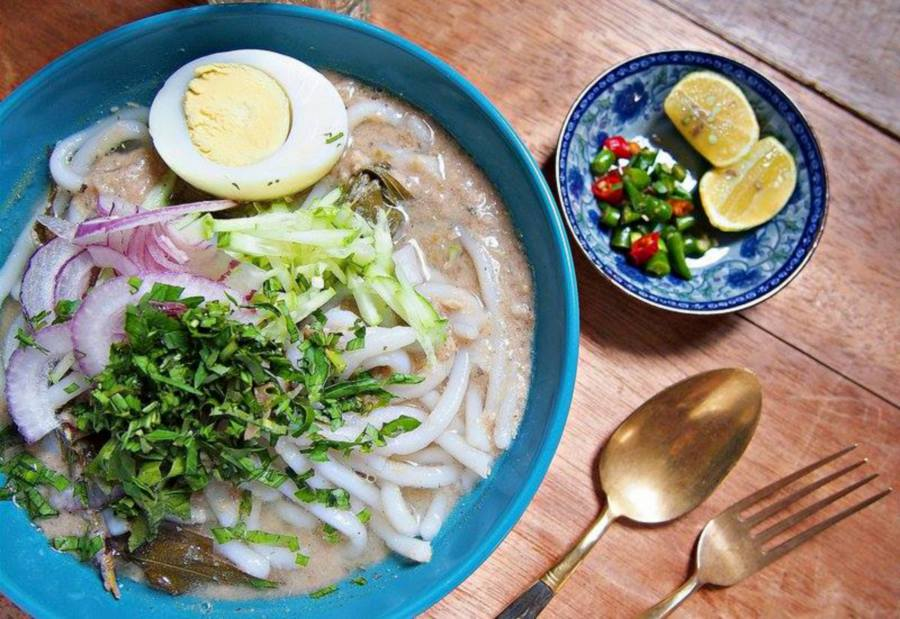

Home
Laksa Kedah

Description
Laksa Kedah is celebrated for its fish-based broth that harmoniously blends flaked mackerel, tamarind, lemongrass, and chillies, creating a sour yet slightly spicy flavour profile.
This soup is then lovingly ladled over a bed of rice noodles and garnished with a generous helping of sliced cucumber, onion, and chillies for an added crunch. A final touch of fragrant polygonum leaves (daun kesum) completes this dish, enhancing its authentic flavour.
Ingredients
- 500g mackerel or sardine
- 200g rice noodles (vermicelli), blanched
- 1 litre water
- 1 stalk lemongrass, bruised
- 1 piece tamarind pulp (asam keping), or to taste
- 1 teaspoon salt, or to taste
- 1 tablespoon sugar, or to taste
- 1 cucumber, julienned
- 1 red onion, thinly sliced
- 2 red chillies, sliced
- A handful of polygonum leaves (daun kesum), finely chopped
- 4 tablespoons chilli paste (adjust based on preferred spiciness)
For the Chilli Paste:
- 10 dried chillies, soaked and deseeded
- 4 shallots
- 2 cloves garlic
- 1/2 teaspoon belacan (shrimp paste), toasted
Steps
- Begin by preparing the chilli paste. Blend the dried chillies, shallots, garlic, and belacan to a smooth paste, then sauté in a pan until fragrant. Set aside.
- Boil the mackerel with lemongrass and tamarind pulp in water until the fish is cooked through. Remove the fish, debone, and flake the meat.
- Strain the broth, return to the pot, and bring to a simmer. Add salt, sugar, and half of the prepared chilli paste. Adjust the seasoning to taste.
- To assemble, place a portion of rice noodles in a bowl. Spoon over the hot soup and top with flaked fish, cucumber, red onion, chillies, and a sprinkle of chopped polygonum leaves.
- Serve hot with a side of the remaining chilli paste for those who desire an extra kick.